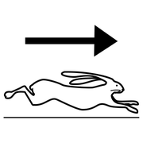
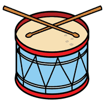
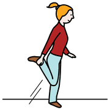

Le categorie primitive, modulo 5
Il tempo: prima, durata, simultaneità
Il tempo non si vede e non si tocca: si costruisce confrontando le proprie azioni con quelle degli altri.
prima / poi
intervallo
istante
Azioni in relazione
 prima
prima dopo
dopo tempo
tempoIl concetto di tempo nasce dall'interazione con ciò che accade attorno e con le persone. Il bambino mette in relazione le proprie azioni con quelle degli altri:
- in differita: io prima, tu dopo;
- in contemporanea: facciamo insieme, per un tratto;
- in simultanea: nello stesso istante, come un tuffo a due.
Nello stesso istante
 correre
correre
veloce lento
lentoLa simultaneità è una conquista difficile: due eventi distanti nello spazio possono accadere nello stesso istante. Per capirlo serve viverlo con il corpo, a coppie o in gruppo.
«Partite insieme» è già un problema matematico: chi decide quando è «insieme»?spunto per la conversazione
attività
Giochi per il tempo

tamburo
saltare aspettare
aspettareIl battito comune
Infanzia e prima primaria
- L'insegnante batte un tamburello a ritmo lento.
- Un gruppo salta su ogni colpo, un altro salta solo dopo il primo gruppo.
- Poi tutti saltano insieme, poi a canone (uno dopo l'altro, senza fermarsi).
- Si rappresenta il gioco con righe di simboli, una per gruppo.
Obiettivo
Distinguere azioni successive, contemporanee e simultanee.
Domande per riflettere
- Quando avete saltato insieme? Come facevate a saperlo?
- Che cosa cambia nel disegno quando i salti sono insieme?